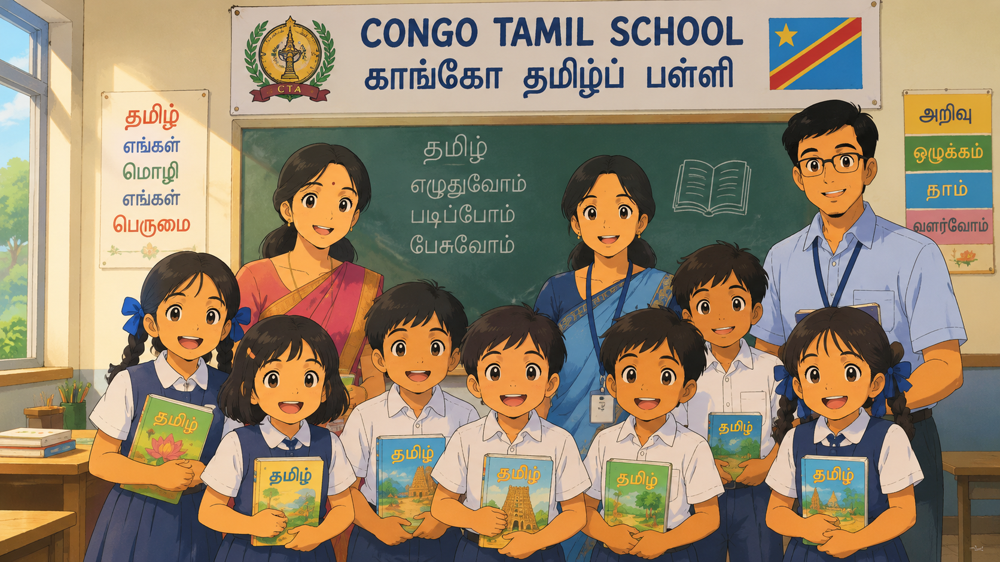

அம்மா, அப்பா, அ, ஆ — teaching our mother tongue to the next generation.
தாய்மொழியாம் தமிழை அடுத்த தலைமுறைக்குக் கற்றுத்தரும் பள்ளி.

The Congo Tamil School is a school that teaches the mother tongue, Tamil, to read, write and speak, for the children of the members of Congo Tamil Association. It has been running every Sunday on the EIS school campus since 2013.
காங்கோ தமிழ்ச் சங்கத்தின் உறுப்பினர்களின் குழந்தைகளுக்கு தாய்மொழியாம் தமிழ் மொழியை எழுதவும் படிக்கவும் பேசவும் சொல்லித்தரும் பள்ளியாக காங்கோ தமிழ்ப் பள்ளி இயங்குகிறது. இது 2013 ஆம் ஆண்டு முதல் ஞாயிறு தோறும் EIS பள்ளி வளாகத்தில் இயங்கி வருகிறது.
Running sinceதொடக்கம்
At EIS school campusEIS பள்ளி வளாகம்
From Tamil letters (உயிர், மெய் எழுத்துகள்) to words and sentences.
உயிர், மெய் எழுத்துகள் முதல் சொற்கள், வாக்கியங்கள் வரை.
Confident conversation in the language of our families.
நம் குடும்பங்களின் மொழியில் தன்னம்பிக்கையுடன் உரையாடல்.
Carrying Tamil language and culture to the next generation.
தமிழ் மொழி, பண்பாட்டை அடுத்த தலைமுறைக்குக் கொண்டு செல்லுதல்.